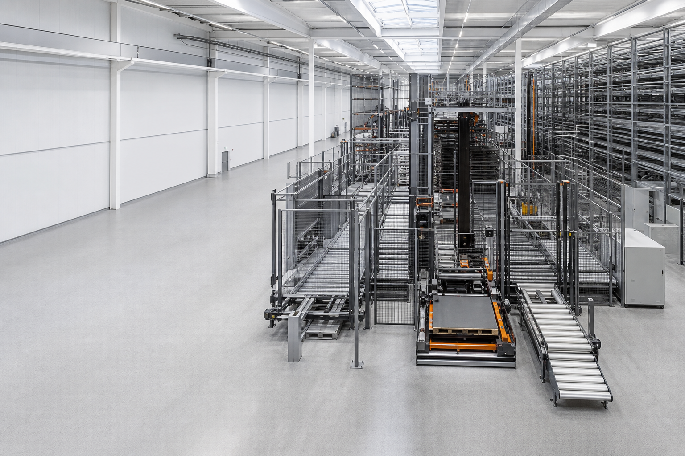

Category
Interactive Engineering Tools
3DTHUMBNAIL
PROJECT PLACEHOLDER
Material Handling Engineer · Kyiv, Ukraine
Material Handling Engineer specializing in CAD automation, technical visualization, and engineering tools.

from engineering logic to clear communication
Portfolio
Five areas of work at the intersection of material handling, visualization, and automation.
Category
PROJECT PLACEHOLDER
Category
PROJECT PLACEHOLDER
Category
PROJECT PLACEHOLDER
Category
PROJECT PLACEHOLDER
Category
PROJECT PLACEHOLDER
About · Kyiv, Ukraine
I’m Misha Slipych, a Material Handling Engineer from Kyiv, Ukraine, working at the intersection of engineering, visualization, and automation.
My work combines material handling knowledge with CAD workflows, technical visuals, and practical engineering tools—making technical information easier to communicate, understand, and use.
Building tools that make engineering easier to understand and use.
Kyiv, Ukraine
Engineering · Visualization · Automation
FOCUS AREAS
Contact
For material handling, CAD automation, technical visualization, or engineering tool projects.